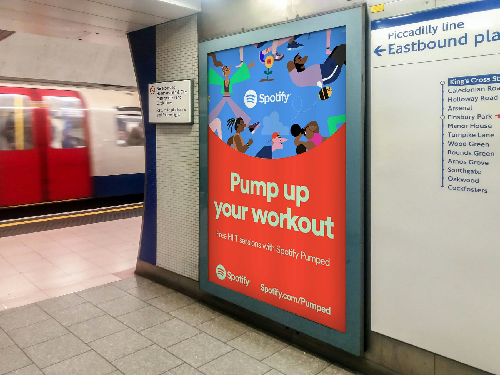
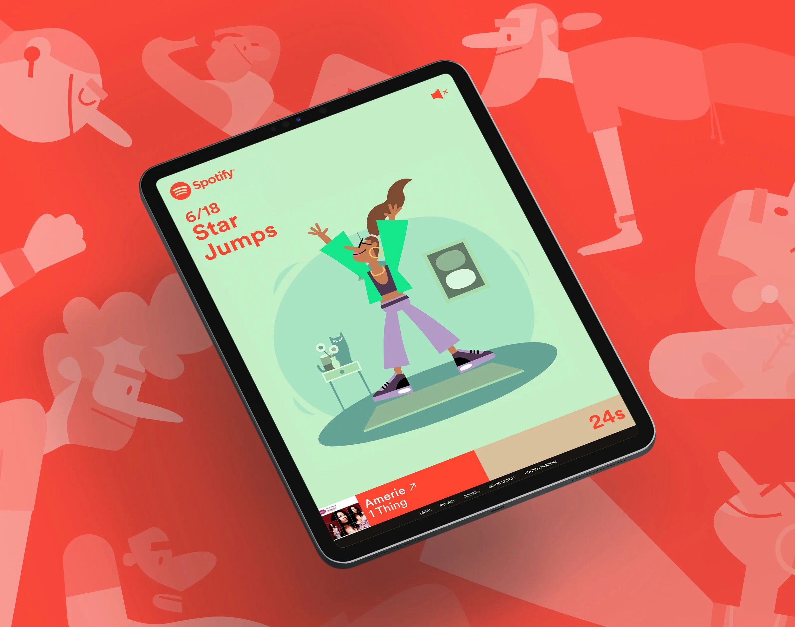
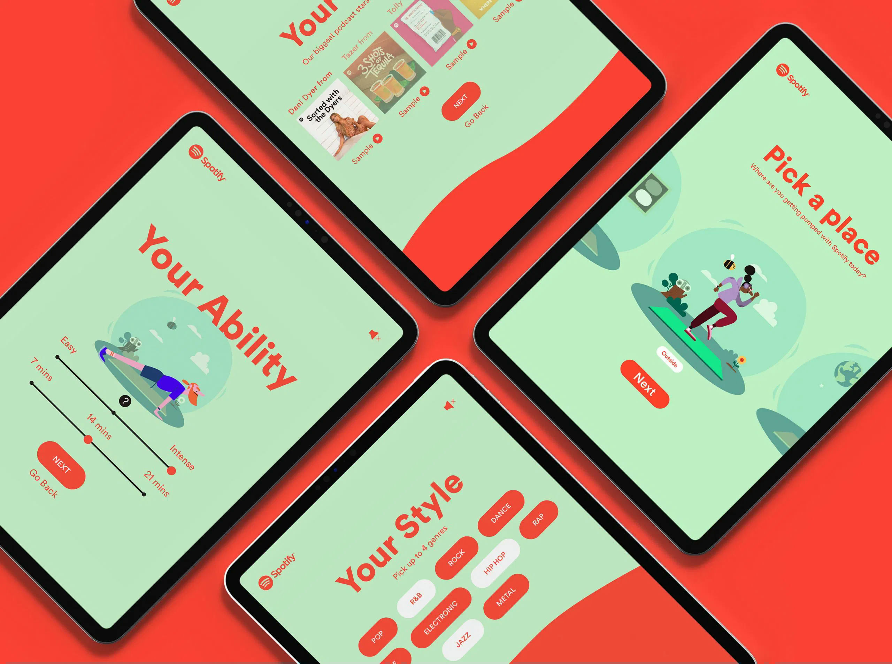

A coach timed
to the beat
Spotify timed a workout to the music. It needed a coach.
To help people power through 2020, Spotify built a High Intensity Interval Training programme timed precisely to 30-second track clips: the right tempo, at the right moment, for each exercise. The workouts were voiced by Spotify's podcast roster, and the whole thing needed a face to follow.


One character, carrying a full session.
The coach had to do a lot: keep pace with the music, demonstrate every exercise clearly, and stay likeable from warm-up to cool-down. Slightly absurd, fully committed. Alex designed and illustrated the character from vector files; KITCHEN animated the workouts in After Effects, cut precisely to each 30-second clip.
“Motivating without being annoying, slightly absurd, and convincing enough to follow for a full session.”

The programme ran through Spotify's 2020 wellness push, the coach fronting workout after workout with podcast hosts in your ears. Character design and illustration by Alex; animation by KITCHEN.